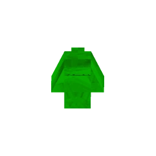

The Cancerous Rodent is a collection of roughly 15 polygons, vaguely arranged in the shape of a mouse. It is found at the end of a tunnel modeled after what is shown in the Civvie's Dungeon intro. The arena takes place in the Civvie's Dungeon Cell. It slowly moves towards V1, but it is the weakest enemy in the game, possessing the lowest health and no attacks.
Despite its weak status, the Cancerous Rodent is a herald of what’s to come. Killing it and moving out of the Dungeon will trigger a confrontation with the Very Cancerous Rodent, a much stronger boss that presents a threat to V1.
The Cancerous Rodent poses no threat to V1. It simply moves slowly toward V1, but its lack of attacks or defenses makes it an easy target. Its primary function is to act as a precursor to the more challenging Very Cancerous Rodent boss encounter, which follows after its defeat. It is often considered a joke enemy because of its lack of combat ability.
While the Cancerous Rodent might seem intimidating at first due to its odd appearance, it can easily be dispatched with a well-placed hitscan attack. It’s recommended to avoid using coins in the fight, as they can complicate the battle. Ground slamming can also work, though it may take a couple of tries to land effectively.
The Attractor Nailgun is a great choice for this fight, as it allows you to pull the Cancerous Rodent into the trap, though it may take some time to position it correctly. Overall, this fight is more of an introduction to the challenges ahead, and there is little risk involved.
Since the Cancerous Rodent does not attack, and V1 is immune to cancer (being a machine), there are no real threats to worry about. Simply defeat it, and prepare for the battle with the Very Cancerous Rodent that follows.